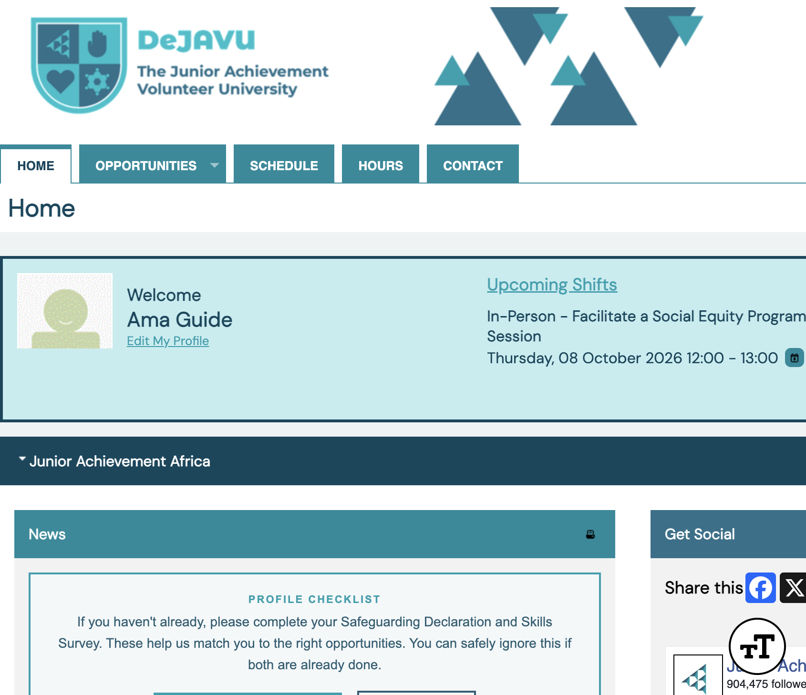
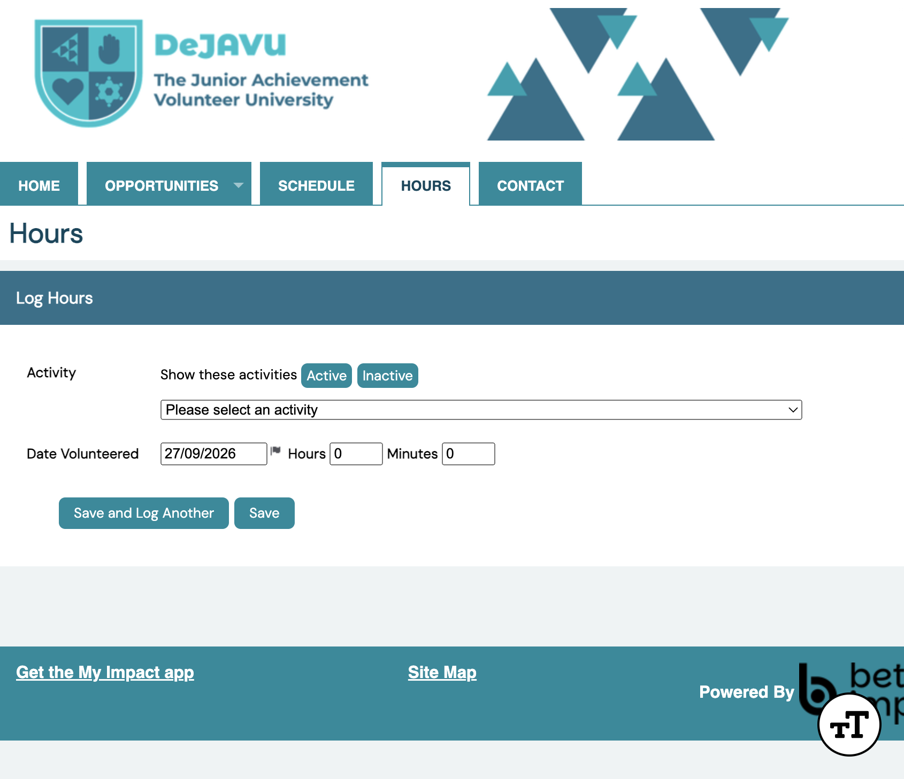
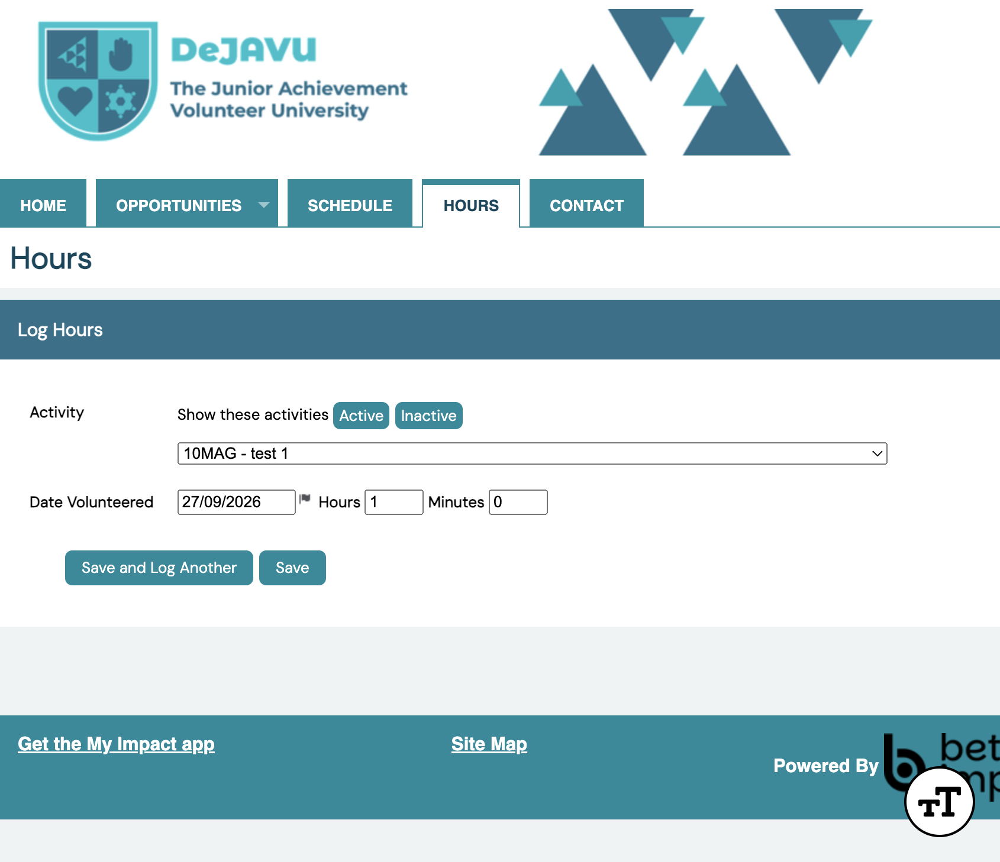
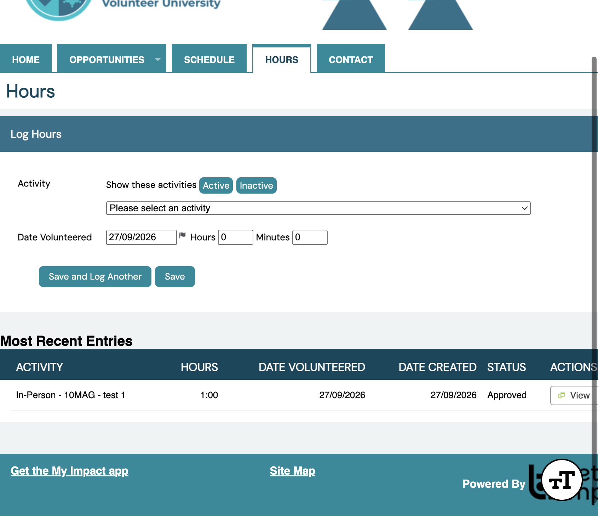

Volunteer guide
Audience · VolunteerLog Your Hours
After you volunteer, record the time you spent so DeJAVU can track your impact. Open Hours from the top menu any time you are logged in.
Path: Hours
Open Hours
Sign in to DeJAVU. On your home page, click Hours in the top menu.

HoursChoose the activity
Under Log Hours, use the Activity dropdown to select the opportunity you volunteered for. Use Active or Inactive above the list if you need to show a different set of activities.

Select activityYour list only shows activities available to you. If an opportunity is missing, contact your country volunteer coordinator.
Enter date and time
Set Date Volunteered to the day you helped (use the calendar icon if needed). Enter Hours and Minutes for the time you spent.
If the activity asks feedback questions on this page, answer them before saving. You can tick Keep Feedback Fields Populated if you log several similar entries.

Hours & minutesSave your entry
Click Save when you are done, or Save and Log Another if you have more time to record.
Your entry appears under Most Recent Entries with the hours, dates, and status (for example Approved). Use View to open the details.

Most Recent EntriesYou generally cannot edit hours after saving. You may delete an entry within about 24 hours; after that, ask your coordinator if a correction is needed.